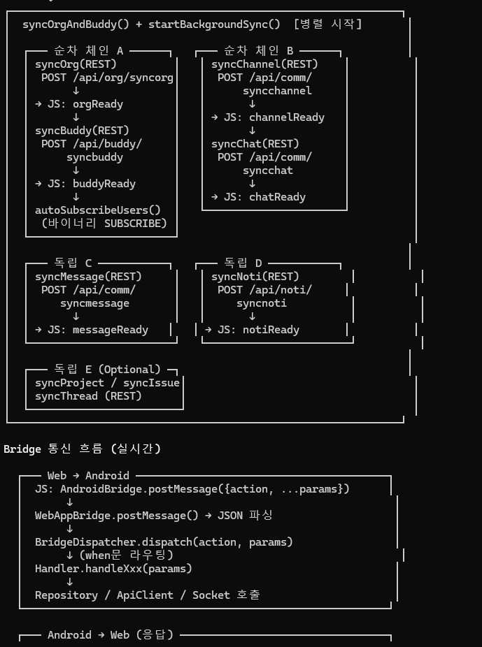

Flow: 초기 Sync 체인
로그인 직후 LoginState.Authenticated 방출 즉시 여러 도메인을 병렬로 sync합니다.
체인 A/B는 순차, 체인 C/D/E는 완전 독립입니다.
Sync 체인 구조
flowchart TB
Auth["LoginState.Authenticated"] --> S["syncOrgAndBuddy()
+ startBackgroundSync()"] S --> A1 S --> B1 S --> C1 S --> D1 S --> E1 subgraph ChainA["체인 A: 조직/버디 (순차)"] direction TB A1["syncOrg()
POST /api/org/syncorg"] A2["JS: window.postMessage({event:'orgReady'})"] A3["syncBuddy()
POST /api/buddy/syncbuddy"] A4["JS: buddyReady"] A5["autoSubscribeUsers()
Binary SUBSCRIBE 0x0902"] A1-->A2-->A3-->A4-->A5 end subgraph ChainB["체인 B: 채널/채팅 (순차)"] direction TB B1["syncChannel()
POST /api/comm/syncchannel"] B2["JS: channelReady"] B3["syncChat()
POST /api/comm/syncchat"] B4["JS: chatReady"] B1-->B2-->B3-->B4 end subgraph ChainC["독립 C: 쪽지"] C1["syncMessage()
POST /api/comm/syncmessage"] C2["JS: messageReady"] C1-->C2 end subgraph ChainD["독립 D: 알림"] D1["syncNoti()
POST /api/noti/syncnoti"] D2["JS: notiReady"] D1-->D2 end subgraph ChainE["독립 E: 프로젝트 (선택)"] E1["syncProject / syncIssue / syncThread"] end
+ startBackgroundSync()"] S --> A1 S --> B1 S --> C1 S --> D1 S --> E1 subgraph ChainA["체인 A: 조직/버디 (순차)"] direction TB A1["syncOrg()
POST /api/org/syncorg"] A2["JS: window.postMessage({event:'orgReady'})"] A3["syncBuddy()
POST /api/buddy/syncbuddy"] A4["JS: buddyReady"] A5["autoSubscribeUsers()
Binary SUBSCRIBE 0x0902"] A1-->A2-->A3-->A4-->A5 end subgraph ChainB["체인 B: 채널/채팅 (순차)"] direction TB B1["syncChannel()
POST /api/comm/syncchannel"] B2["JS: channelReady"] B3["syncChat()
POST /api/comm/syncchat"] B4["JS: chatReady"] B1-->B2-->B3-->B4 end subgraph ChainC["독립 C: 쪽지"] C1["syncMessage()
POST /api/comm/syncmessage"] C2["JS: messageReady"] C1-->C2 end subgraph ChainD["독립 D: 알림"] D1["syncNoti()
POST /api/noti/syncnoti"] D2["JS: notiReady"] D1-->D2 end subgraph ChainE["독립 E: 프로젝트 (선택)"] E1["syncProject / syncIssue / syncThread"] end
왜 분리되어 있는가?
- 체인 A는 순차: 조직도 없이 버디 목록 표시 불가 → 순서 보장 필요
- 체인 B는 순차: 채널 없이 채팅 메시지 sync 불가
- C/D/E는 독립: 다른 데이터와 의존관계 없음. 가장 먼저 끝난 것부터 UI 반영
각 단계 상세
syncOrg
// OrgRepository.syncOrg()
val body = JSONObject().apply {
put("userId", userId)
put("lastSyncTime", syncMetaDao.get("org_last_sync_time")?.value?.toLongOrNull() ?: 0L)
}
val response = ApiClient.postJson(appConfig.getEndpointByPath("/org/syncorg"), body, token)
// 응답 처리
val depts = response.optJSONArray("depts")
val users = response.optJSONArray("users")
deptDao.insertAll(depts.toEntities())
userDao.insertAll(users.toEntities())
syncMetaDao.upsert(SyncMetaEntity("org_last_sync_time", response.optLong("lastSyncTime").toString()))
// React에 알림
ctx.notifyReact("orgReady")syncChannel → syncChat
syncChannel 완료 후에만 syncChat 실행. syncChat은 채널별로 최근 N개 메시지만 가져옴 (lazy loading).
autoSubscribeUsers (Binary)
버디 목록 + 최근 채널 멤버의 프레즌스를 구독:
// PubSubRepository
val body = JSONObject().apply {
put("topic", JSONArray(listOf("INFO", "NICK", "ICON_PC", "ICON_MOBILE")))
put("targetList", JSONArray(userIds))
}
sessionManager.sendFrame(ProtocolCommand.SUBSCRIBE.code, body.toString().toByteArray())React 측 이벤트 수신
// SPA 어디서나
window.addEventListener('message', (e) => {
const msg = typeof e.data === 'string' ? JSON.parse(e.data) : e.data;
switch (msg.event) {
case 'orgReady': dispatch(loadOrgTree()); break;
case 'buddyReady': dispatch(loadBuddyList()); break;
case 'channelReady': dispatch(loadChannels()); break;
case 'chatReady': dispatch(loadRecentChats()); break;
case 'messageReady': dispatch(loadMessages()); break;
case 'notiReady': dispatch(loadNotis()); break;
}
});재시도/실패 처리
- 각 sync는 try-catch +
Log.e. 실패해도 앱은 계속 동작 - 3회 연속 실패 시 sync 정지 (React 측 배지가 "오프라인 상태" 표시)
- 소켓 재연결 시 자동으로 재동기화 시작
